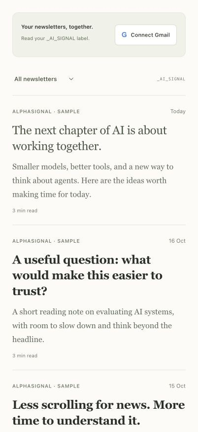
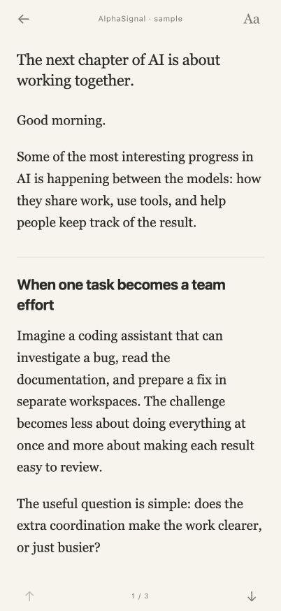

A personal newsletter reader
Newsletters,
without the noise.
Read multiple newsletters, on any topic, in one quiet Gmail feed. Open an edition, get comfortable, and filter by publication whenever you like.
Bring your own Gmail account and private deployment. The current setup uses Codex with the Sites plugin.




Fictional sample editions. No private email is shown.
A simpler reading habit
One label. All your newsletters.
I built AI Signal for myself because I didn't want to pay for Meco. I only needed a Gmail newsletter feed and a comfortable place to read.
AI news is my own use case; you can read newsletters on any topic, from one publisher or several. This is an independent project, unaffiliated with Meco.
- 01
Label it in Gmail.
Create
_AI_SIGNALand add editions from any of your newsletters. Use this same label for every topic. A Gmail filter can collect future emails for you. - 02
Open your feed.
See the newest editions together. Filter by publication when you want to catch up on one newsletter.
- 03
Read at your pace.
Choose your text size and reading view. Your preferences stay saved, and article links open separately.
Built around the writing
More room
for the writing.
The reading view removes common signup menus and administrative footers. Warm paper and serif text keep the focus on the edition.
Prefer the publisher's formatting? Switch to Email layout. Text size, your default view and image settings are remembered on your device.
Read the original writing, without generated summaries. Use your browser, or add your reader to the iPhone Home Screen.
Your account, your copy
A private place
for your newsletters.
You connect your own Google account to your own deployment. Google grants read-only mailbox access; the app limits its reads to _AI_SIGNAL.
A configured server keeps your Google connection encrypted so access can renew. Email content is not archived, and remote images start off.
Read the privacy noticeOpen source · MIT licence
Start with your own reader.
Use, adapt and share your own copy. The guide walks through a private Sites deployment, your Google Cloud settings and the first Gmail connection.